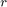

Hough Circle Transform
An example using the Hough circle detector.
This program demonstrates circle finding with the Hough transform. We show how to use the OpenCV function cv.HoughCircles to detect circles in an image.
Sources:
- https://github.com/opencv/opencv/blob/3.2.0/samples/cpp/houghcircles.cpp
- https://github.com/opencv/opencv/blob/3.2.0/samples/python/houghcircles.py
- https://docs.opencv.org/3.2.0/d4/d70/tutorial_hough_circle.html
- https://github.com/opencv/opencv/blob/3.2.0/samples/cpp/tutorial_code/ImgTrans/HoughCircle_Demo.cpp
- https://docs.opencv.org/3.2.0/da/d53/tutorial_py_houghcircles.html
Contents
Theory
The Hough Circle Transform works in a roughly analogous way to the Hough Line Transform.
In the line detection case, a line was defined by two parameters . In the circle case, we need three parameters to define a circle:
where define the center position (green point) and  is the radius, which allows us to completely define a circle, as it can be seen below:

For sake of efficiency, OpenCV implements a detection method slightly trickier than the standard Hough Transform: The Hough gradient method, which is made up of two main stages:
- the first stage involves edge detection and finding the possible circle centers
- the second stage finds the best radius for each candidate center
For more details, please check the book Learning OpenCV or your favorite Computer Vision bibliography.
Code
This program:
- Loads an image and blur it to reduce the noise
- Applies the Hough Circle Transform to the blurred image .
- Display the detected circle in a window.
Input image
if ~mexopencv.isOctave() && mexopencv.require('images') fname = which('coins.png'); else fname = fullfile(mexopencv.root(), 'test', 'detect_blob.png'); end assert(~isempty(fname) && exist(fname,'file')==2, 'Image not found'); img = cv.imread(fname, 'Color',true); figure, imshow(img), title('source')
convert it to grayscale, and reduce noise to avoid false circles detection
gray = cv.cvtColor(img, 'RGB2GRAY'); if true gray = cv.medianBlur(gray, 'KSize',5); else gray = cv.GaussianBlur(gray, 'KSize',[7,7], 'SigmaX',0.9, 'SigmaY',0.9); end
Hough Circle Transform
- change MinDist to detect circles with different distances to each other
- change MinRadius and MaxRadius to detect circles of different sizes
tic circles = cv.HoughCircles(gray, 'Method','Gradient', 'DP',2, ... 'MinDist',size(gray,1)/8, 'Param1',200, 'Param2',100, ... 'MinRadius',20, 'MaxRadius',80); toc
Elapsed time is 0.023248 seconds.
draw detected circles (outlines and centers), and display the result
circles = cat(1, circles{:});
center = round(circles(:,1:2));
radius = round(circles(:,3));
out = cv.circle(img, center, radius, 'Color',[0 0 255], ...
'Thickness',2, 'LineType','AA');
out = cv.circle(out, center, 3, 'Color',[0 255 0], ...
'Thickness','Filled', 'LineType','AA');
figure, imshow(out), title('detected circles')